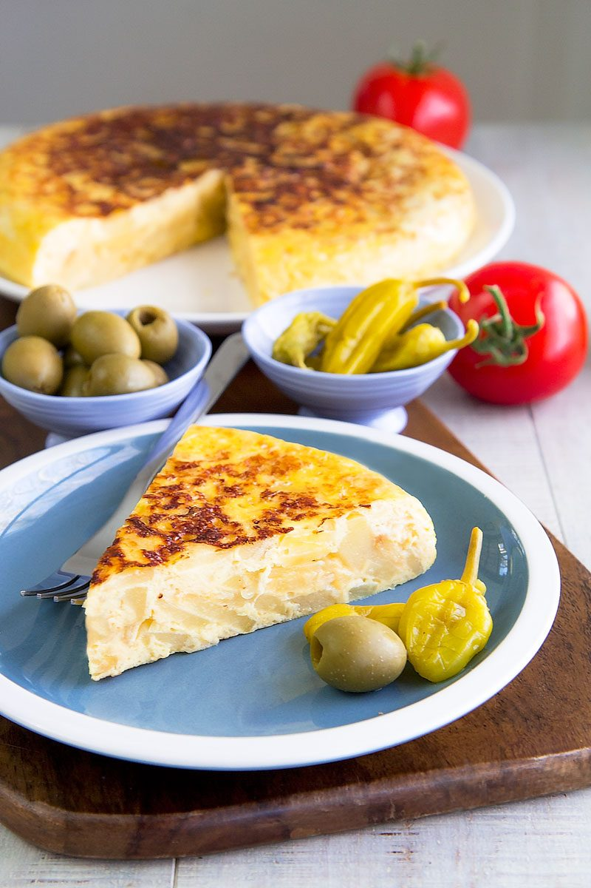
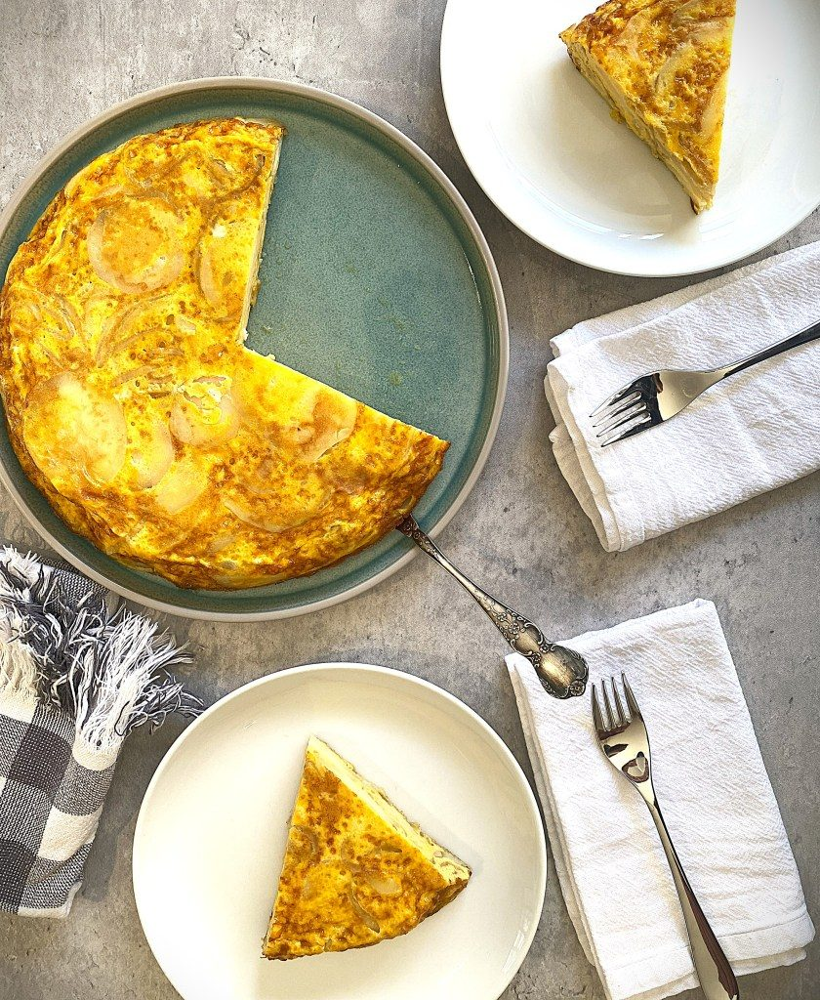
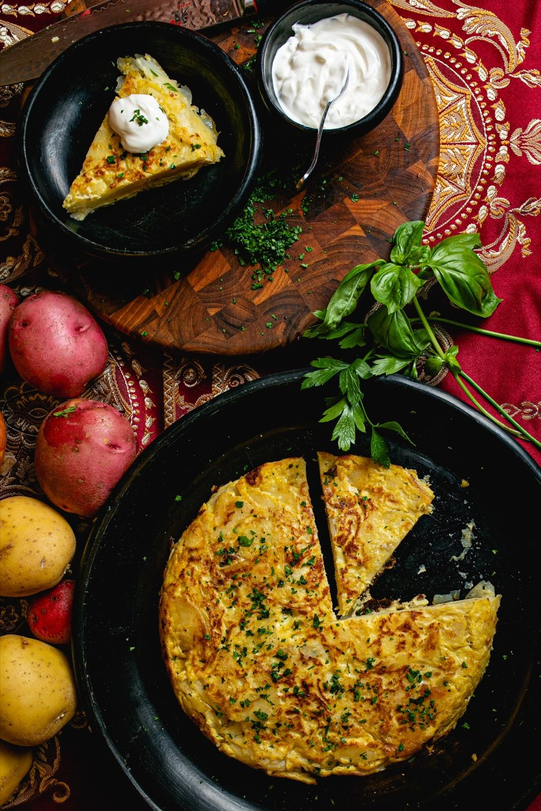
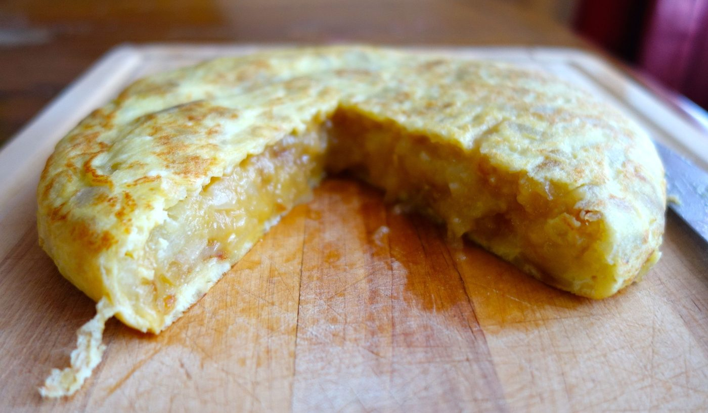
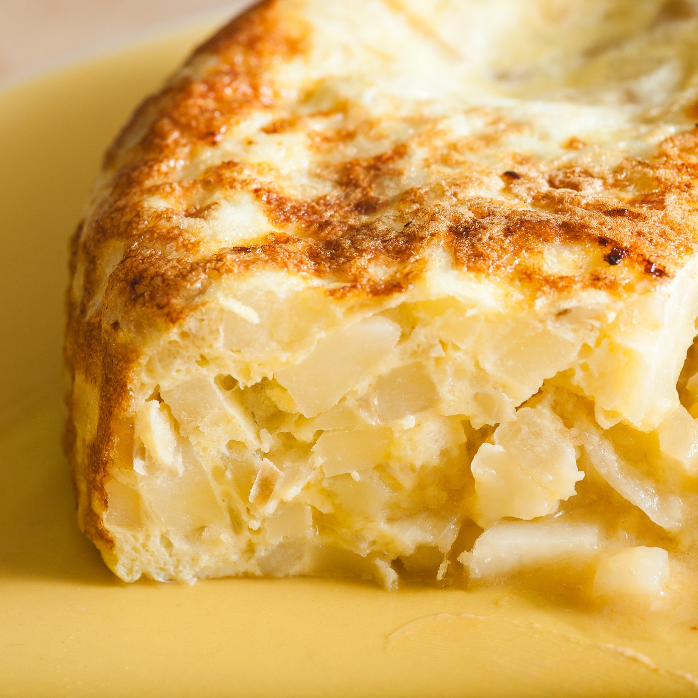
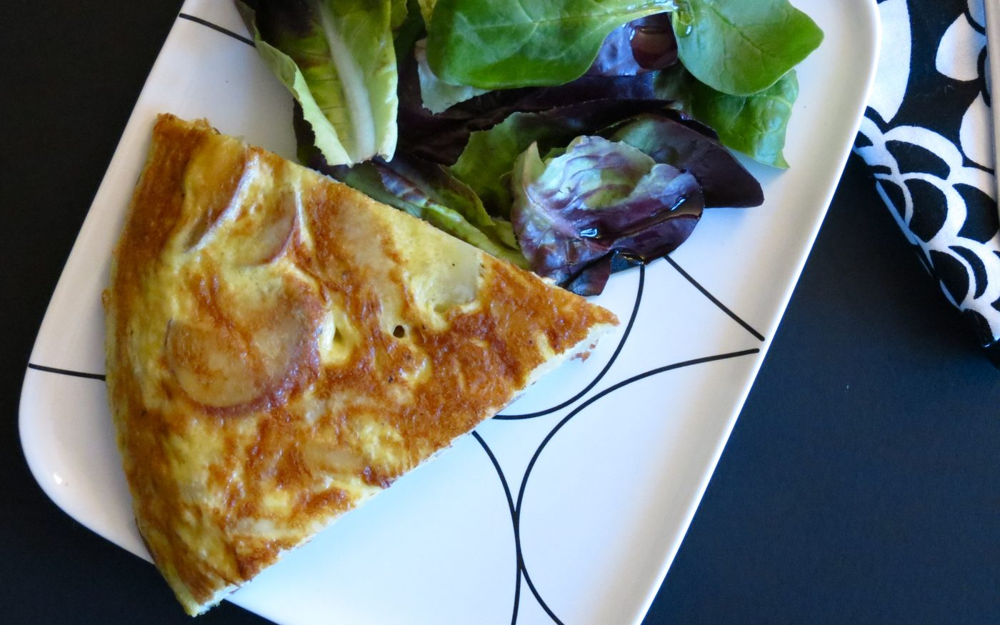
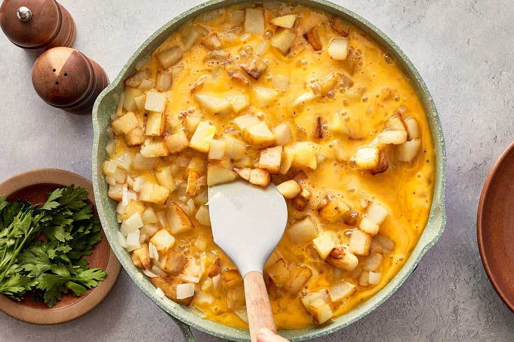

← Mediterranean Sun
Spanish Tortilla
Three ingredients — egg, potato, olive oil — and the most argued-about technique in Spain.
Three ingredients — egg, potato, olive oil — and the most argued-about technique in Spain.
Tortilla de patatas is Spain's dish of the people: a thick potato omelet, golden outside and barely-set inside, cut in wedges and eaten at any hour. Every bar has one, every family has an opinion about the interior — juicy (jugosa) versus fully set — and the arguments have real geopolitical energy.
The traditional technique feels extravagant until you try it: potatoes poached in generous olive oil rather than fried hard, so they turn buttery-soft without color. That oil, infused with potato, is strained and reused — it becomes liquid gold for the next tortilla. Some add onion; Spain divides itself over this ('con cebolla' vs 'sin cebolla') with the fervor of a national election. This recipe says yes, onion, and dares you to complain.
serves 4-6 — tick items off as you shop; it saves as you go
Warm the oil in a small deep pan over medium-low. Add potato slices and onion; they should barely bubble. Cook 20-25 minutes, occasionally nudging, until potatoes are tender enough to break with a spoon — no browning.
Drain, reserving the oil. It now tastes of potato; it will make your next tortilla, or this one's flip, measurably better.
Beat eggs with a big pinch of salt, fold in warm potatoes gently, and rest 10 minutes. The potatoes drink egg and the whole thing coheres better in the pan.
Wipe out the pan, film it with the reserved oil, get it properly hot. Pour the mixture. Cook 3 minutes on medium-high, then lower and cook 4-5 more until the bottom is set and golden. The center should still wobble.
Slide a plate over the pan, flip in one committed motion, slide the tortilla back in raw-side down. Cook 3-4 minutes. Two plates are safer than one; commitment matters more than equipment.
Tortilla is best warm or room temperature, never hot — the custard sets as it rests. Wedge it, and eat it as breakfast, lunch, tapa, or midnight snack. It declines no occasions.







Images are web-sourced via image search and self-hosted. Original sources:
https://z-cdn.chatglm.cn/image-search-mcp/images-ppt/34942a139d8c.jpghttps://z-cdn.chatglm.cn/image-search-mcp/images-ppt/6b9c2593a117.jpghttps://z-cdn.chatglm.cn/image-search-mcp/images-ppt/75b1b2e36f77.jpghttps://z-cdn.chatglm.cn/image-search-mcp/images-ppt/b5565928ab64.jpghttps://z-cdn.chatglm.cn/image-search-mcp/images-ppt/cf2fcd9f630e.jpghttps://z-cdn.chatglm.cn/image-search-mcp/images-ppt/dc5bfb15f426.jpghttps://z-cdn.chatglm.cn/image-search-mcp/images-ppt/f1952624177f.jpgVerified working videos — click a card to load the embed.


Powered by GitHub Issues — the backup kitchen. One issue per recipe; your comment lands in the repo.